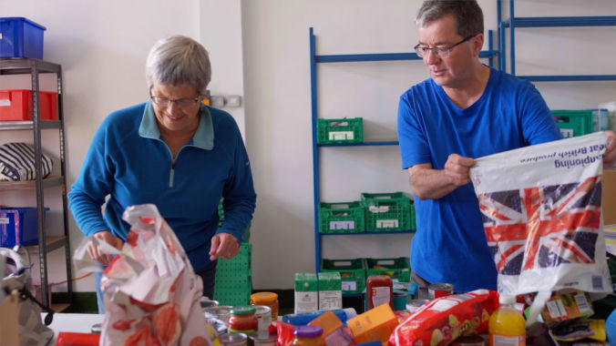
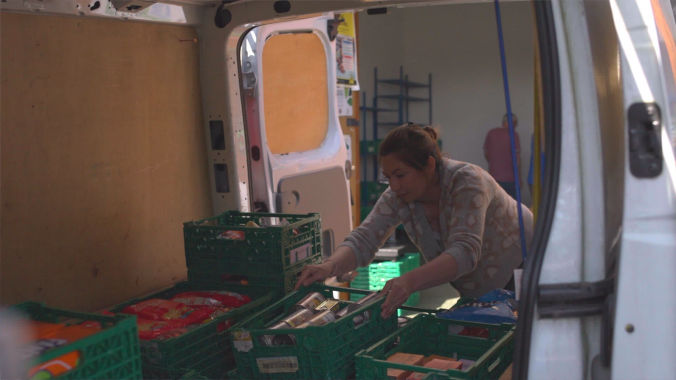
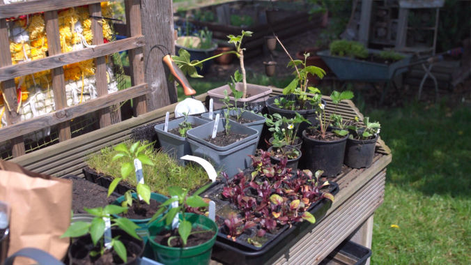

A Charity Videographer Who's Videos Work
When it comes to hiring a charity videographer, you don’t want to waste important funding or spend time and energy you don’t have.
We're Katy and Eugene and we make charity videos, bringing together careful strategy, respectful storytelling and a relaxed process, so your video reaches the right people and gets them to donate, volunteer and spread the word.
We have over 8+ years experience working with charities who keep coming back. We love working with grass roots organizations, but our work has also worked with larger non-profits such as the Obama Foundation and Trocaire.
Charity Videographer - Clear Strategy, Clear Results
Our charity videographer services get results because we take the time to deeply understand your charity. We start by exploring your mission, values, and the tangible benefits you provide. What you do, why it matters, how you solve your audience’s challenges, and what makes you unique. We then research your audiences, the people you serve, the supporters who believe in you, and the organisations or individuals you need on your side. We look at the problems they face, what matters to them, and the change you create for each of them. By combining your strengths, audience insights, and clear proof of the impact you make, our videos tell your story in a way that is clear, relatable, and delivers real results.
“Katy was so thoughtful and worked deftly with our team to create a beautiful, thoughtful, and insightful video. The footage is the best we have seen from our schools – the colours, images, and shots are amazing. We are so grateful for her expertise and time.” Reshma Patel, Impact Network
Charity Videographer - Stress Free Process
Working on a video with a charity videographer can be stressful when you’ve got so many other priorities. We make sure you and your team feel relaxed on camera, while we handle the logistics, planning, and editing. With clear timelines, easy revisions, and licensing taken care of, your video is delivered on time and ready to share. We can also provide board- and funder-ready reporting, coordinate across different teams or locations, and stay flexible if there are any last-minute changes.
“We absolutely loved working with Katy and Eugene. They were so professional from start to finish and managed to capture Heartfelt beautifully. We would highly recommend them and will definitely work with them again.” Julie Hadley, The Heartfelt Project
Charity Videographer - Stories Told With Care
We tell stories with respect by showing the people you serve in a way that’s honest and dignified. We make sure everyone knows how their story will be used and work with them to capture moments that feel real, not staged. Our charity videographer videos follow a simple story arc, showing the highs and lows, repeat the key ideas your audience needs to remember, and include personal moments that feel real, not generic. We focus on people’s strengths and choices, use visuals and language that feel natural, and avoid stereotypes. The result is stories that make people remember the individuals and communities we feature all while honouring who they are and the difference they make.
“I enjoyed working with the duo from the first day to the end. I like their professionalism and their adaptation to different situations. They have worked with us in the rain and sunshine… Keep up the good work. On behalf of the team and our participants, we say Karibu tena, Welcome again!!” David Mulo, Pollination Project
Charity Videographer - Professional Videos That Work
As a charity videographer we create a little world for your audience to step into, where every detail, colour, lighting, framing, and sound is carefully considered. It’s a mix of documentary and commercial, real moments, but polished, clear, and on-brand. We've worked in a range of places from South Africa to Portugal, UK to Kenya and we’re used to rolling with whatever comes our way. We've been caught in protests, powercuts and pushed cars out of the mud, so you can relax knowing we’ll make it work. The result is a professional, trustworthy charity video that feels genuine and connects.
“The videos for this month are so beautiful! The aesthetic and feeling of them are consistent and warm. We feel really lucky to have such quality and authentic videos to share every month.” Kate Holby, Ajiri Tea
Charity Videographer - Make Your Video Happen
As a charity videographer we make sure your video gets results and reaches the right people. From handling all the planning, filming, editing, and delivery, so the process is stress-free and your team can focus on your work. We capture real moments in a way that is accurate and respectful, and make sure every detail from visuals to sound is carefully considered.
Email us today to start your video,
katy@munjiri.com




FAQs – Charity Videographer
1. How much will a charity video cost?
We know budgets are tight, and every charity is different. That’s why we give tailored quotes that fit your project. Whether it’s a small grassroots video or something bigger, we make sure your money goes as far as possible.
2. How long does it take to make a video?
Most videos take about 4–6 weeks from start to finish. We’ll keep you in the loop every step of the way so it never feels like a guessing game.
3. Can you film in different locations or with remote teams?
Yes! We’ve filmed across cities and even countries. Wherever your story is happening, we can be there, and we make it easy to coordinate with your team so it’s stress-free.
4. Do we need to approve every little thing?
Nope. We focus on the big moments, script, draft edits, final video, so your input matters, but your team doesn’t get bogged down in endless approvals.
5. How do you make sure the people we help are shown respectfully?
As a charity videographer, we care about real stories. Everyone featured knows how their story will be used, and we capture moments that feel natural, honest, and dignified — no clichés, no stereotypes.
6. Will the video actually help our charity?
Yes! A good charity videographer doesn’t just make something that looks nice — we make videos that reach the right people and encourage them to donate, volunteer, or spread the word.